build your own vue runtime-core
Table of Contents
Vue3 runtime-core
旧博客中的相关文章：
Vue3 源码头脑风暴之 7 ☞ runtime-core(1) - 若叶知秋
Vue3 源码头脑风暴之 7 ☞ runtime-core(2) - render - 若叶知秋
测试代码涉及到非runtime-core的会直接使用 core/packages at main · vuejs/core 现成的代码去测试
core/packages/runtime-core at main · vuejs/core 应该说是最核心的一个模块了，以 h 函数为入口涵盖了组件完整生命周期的处理，从 vnode -> dom, mount -> update -> unmount 的实现原理。
GlobalVars
1: const compilerSFC = require(process.env.NODE_LIB + "/@vue/compiler-sfc") 2: const { 3: isArray, 4: isFunction, 5: isString, 6: isObject, 7: EMPTY_ARR, 8: extend, 9: PatchFlags, 10: ShapeFlags, 11: SlotFlags, 12: isOn, 13: toDisplayString, 14: camelize, 15: capitalize, 16: toHandlerKey, 17: normalizeProps, 18: normalizeClass, 19: normalizeStyle, 20: isNoUnitNumericStyleProp 21: } = require(process.env.NODE_LIB + "/@vue/shared") 22: 23: const { 24: isProxy, Ref, toRaw, isRef 25: } = require(process.env.NODE_LIB + "/@vue/reactivity") 26: 27: const InternalObjectKey = `__vInternal` 28: const ShapeFlags = { 29: ELEMENT: 1, 30: FUNCTIONAL_COMPONENT: 1 << 1, 31: STATEFUL_COMPONENT: 1 << 2, 32: TEXT_CHILDREN: 1 << 3, 33: ARRAY_CHILDREN: 1 << 4, 34: SLOTS_CHILDREN: 1 << 5, 35: TELEPORT: 1 << 6, 36: SUSPENSE: 1 << 7, 37: COMPONENT_SHOULD_KEEP_ALIVE: 1 << 8, 38: COMPONENT_KEPT_ALIVE: 1 << 9, 39: COMPONENT: ShapeFlags.STATEFUL_COMPONENT | ShapeFlags.FUNCTIONAL_COMPONENT 40: }
1. 简介
runtime-core的核心入口函数即h也就是createVNode函数，所以会以这个为切入点。

本文中涉及的一些关键点记录
- class 支持数组(
['foo', 'bar'])，对象({foo:true,bar:false})，字符串('foo bar') - style 支持数组(
['color:red', {foo:'foo'}])，对象({color:'red',foo:'foo'})，字符串('color:red') - class component 条件：
- 必须是 function 类型，其实 class 只不是个语法糖，实际它也是个函数类型。
- 含
__vccOpts = { template: '<div />'}
-
和 函数多种使用方式组合？
h(type, propsOrChildren, ...children), 参数个数多变，对于这个函数的使用方法 记 忆只要记住一点：props 总是对象，children 可以是对象(必须是 VNode 类型 _visVNode)也可以是 数 组，所以：
argc = 2, 如果是数组就一定是 children
argc = 2, 如果是对象且有 _visVNode 标识，一定是 children 否则是 props
argc = 3, 按照 h(type, props, children) 处理
argc > 3, 按照 h(type, props, …children) 处理，从第三个开始都是 children
createVNode(type, props, children), 固定三个参数，第二个一定是 props, 第三 个 一定是数组类型的 children，因为它后面还有更多的其他参数(patchFlag, dynamicProps, isBlockNode)，所以前三个必须确定下来。
- 中的 source 只能是 reactive/ref/function/array 类型， 如果是数组时其元素只能是 reactive/ref/function
-
是如何直接使用
newVal.a的？var obj = shallowRef({ a: 0 }); watch(shallowRef, (newVal) => { dummy = newVal.a; // 这里为什么可以直接访问 obj.a，obj 又是什么？ });
-
？
实际上就是一个应用级别的全局变量，然后通过原型链继承的方式实现传递。
provide(key,value)向组件provides[key] = value设置inject(key)从组件provides[key]取值 -
setup() 返回值用来做了啥？
如果是函数会被当做是该组件的 render 函数，可在使用 jsx 或 api 方式定义组件的时 候使用。
如果是一个对象则会被合并到 data 上去,所以如果使用了 setup() 可以考虑省略掉 vue2 的 options api 写法。
- 组件声明周期函数(onBeforeXxx, onXxx)触发顺序是什么？
在开始之前，先来看看 createApp() 做了什么，首先看一下 vue3
是如何启动项目的。
createApp(<App/>).use(ElementPlus).mount('#app')
因此首先应该是 createApp(<App/>) 然后才是
mount，这个两个关键节点的实现也都在 runtime-core
这个包里面，所以这里就按照这个开发流程一步步往下解析(注： 至于 <App/>
就不讲了，这个其实就是一个 root render 函数，与
build your own vue compiler-core 有关)。
下面是一个大致的流程图，供参考。
{kind=link}
如上图， app 提供了几个能力：
-
app.config配置应用的能力app.config.globalProperties注册全局对象app.config.compilerOptions提供额外的编译选项
app.use(Plugin)注册插件，如：use(router),use(ElementPlus),use(vuex)等等app.component(name, MyComponent)注册全局组件到context.components[]，这里注册的组件可以直接在任意子组 件中直接使用<my-component/>而不需要引入。app.mixin()这个是为了兼容 vue2.x 的 options api。app.directive(name, { beforeMount, mounted, ... })注册全局指令(context.directives[])使用的。app.mount(Container)app.provide(key, value)注入 root 级别的共享变量，子组件中可以通过inject(key)拿到这些变量，实现就是基于原型链。